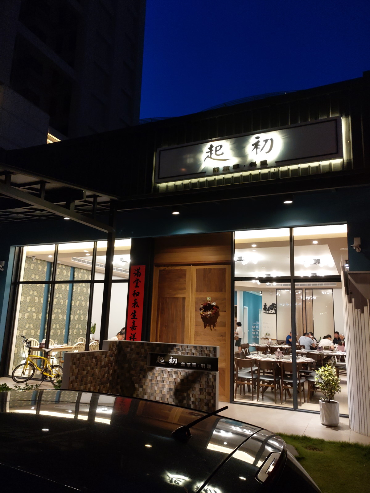
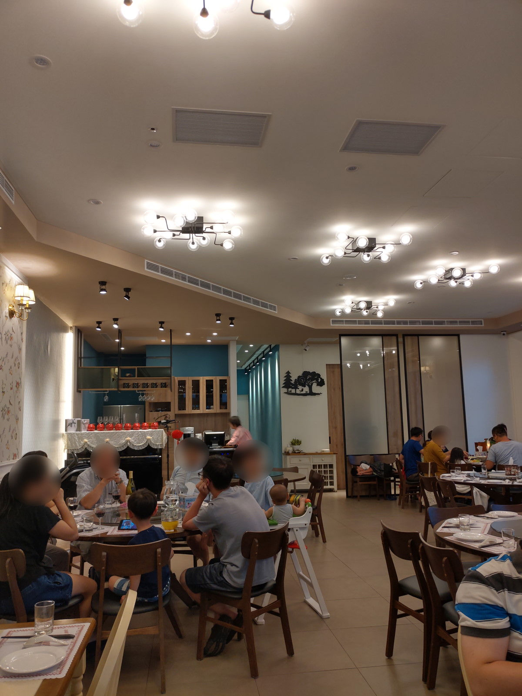
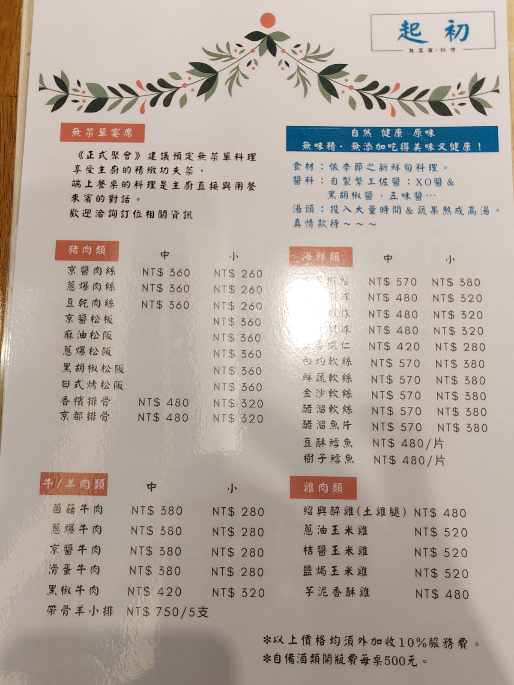
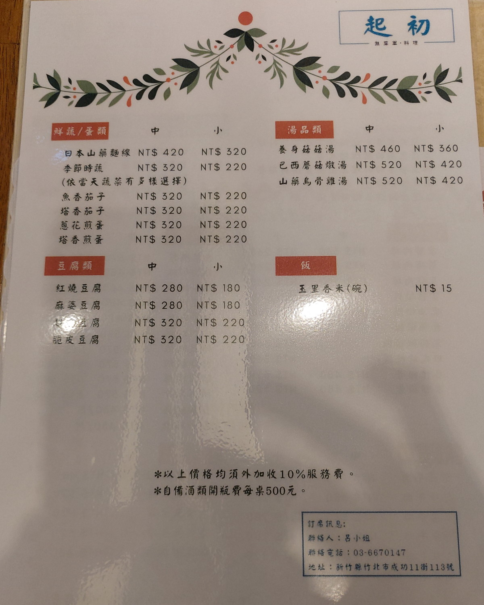
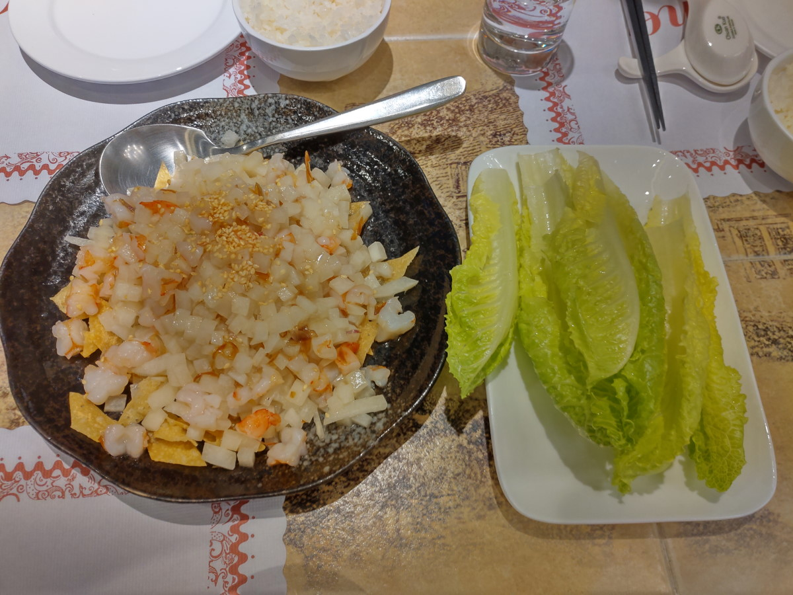
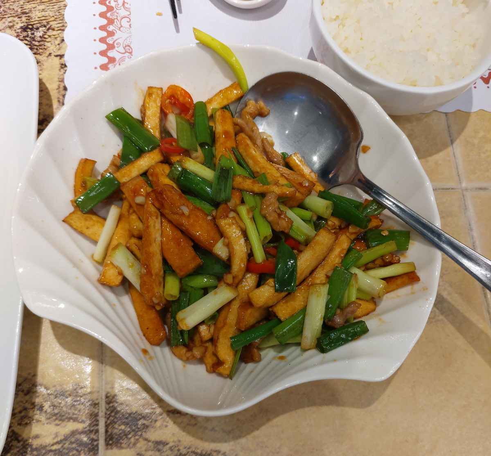
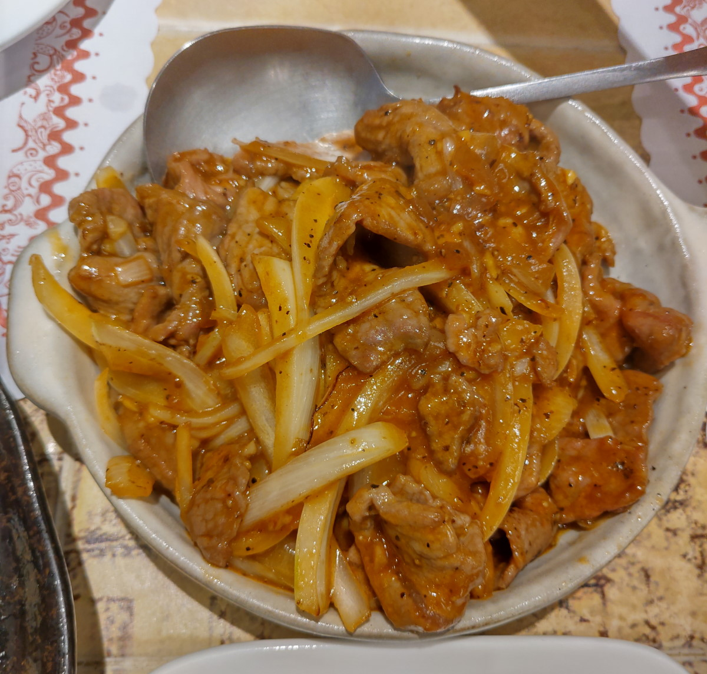
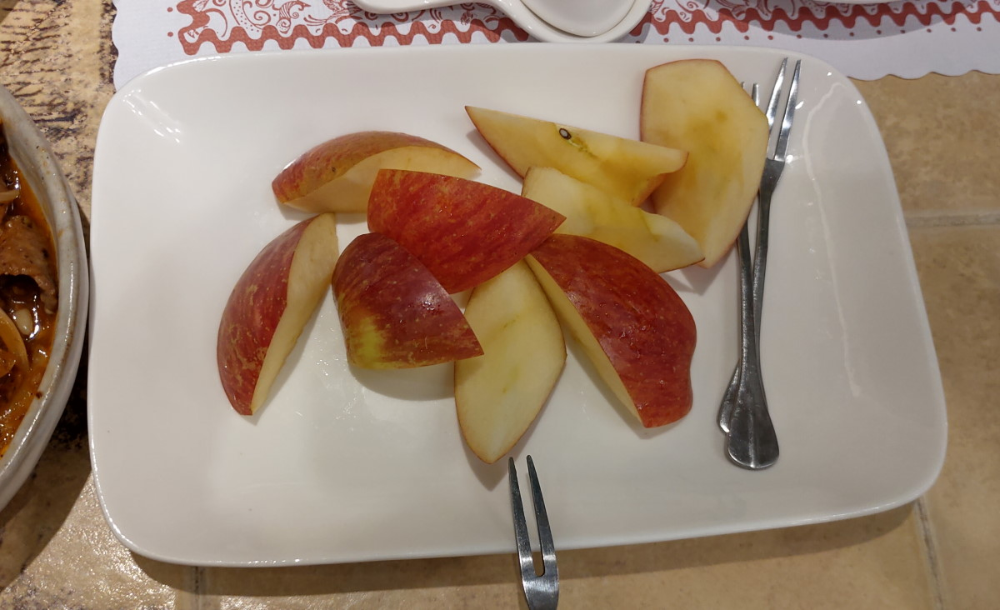
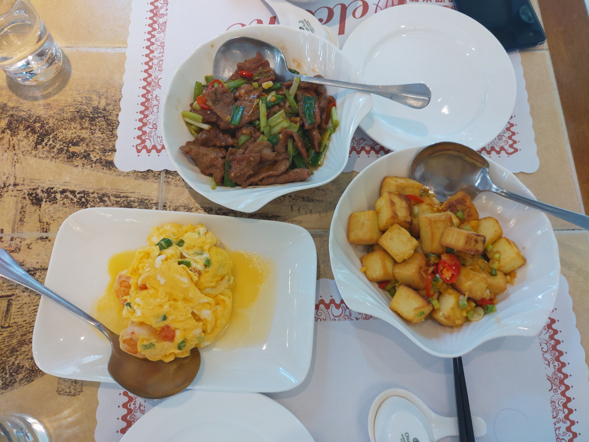

[竹北] 起初無菜單.料理
| 餐廳名稱: | 起初無菜單.料理 |
|---|---|
| 地 址: | 新竹縣竹北市成功11街113號 |
| 營業時間: | 週二 ~ 週日 11:30 - 14:30 17:30 - 21:30 |
| 週一 公休 | |
| 電話 : | 0937135584 |
某星期天的晚上，又想找一家沒吃過的餐廳來踩雷，看到這家無菜單料理， 本來想說通常都要預訂才吃的到，可能還限制最少幾人，大概當天無緣吃到了。 沒想到仔細查下去，平時有個基本菜單，讓臨時的客人也能享用。 這樣就有興趣試試了，因為敢開無菜單料理通常是對手藝有自信，優秀手藝 拿來弄幾道家常菜，應該也是高分的家常菜吧。
話不多說，就衝來了。竹北已經發展到不好停車了，沒想到店家租的這店面， 有個緊鄰的空地，像 Stack 一樣，Last In First Out，約可停 3 , 4 輛，只是寬度不夠，如果最裡面的車要出來， 前面三台只好先移車，讓車出來。初訪時很幸運，停在最外面，然後 我們吃 幾道家常菜就結束了，後面車的客人吃無菜單料理，菜還沒上完呢。不過二訪 就沒那麼幸運了，移了一次車。

店內裝潢很新，還擺一架鋼琴，官網解釋說 主廚學過，偶而會彈一下，真是優秀啊，菜做的好吃 還會彈鋼琴。 
今天不是吃無菜單，自然是要點幾個菜。女主人誇口，每道菜都好吃。第一次聽，內心當然竊笑，想說 老王賣瓜的話也聽多了，沒想到吃完以後，這句話真實度應該有九成，勉予承認。  
其實會先送上水杯，店家似乎買了很厲害的過濾器，那個水感覺還不錯耶。然後，第一道菜 蝦鬆 就上了，他 蝦鬆 的作法跟別人不一樣，脆油條 換成 炸餛飩皮，脆度差不多，調味也佳， 就是蝦仁少了點。 
豆干肉絲，這道菜鑊氣有出來，維基百科說有鑊氣才會引起焦化反應及梅納反應，這道菜做到了，好吃。 雖然台北的六品小館 的 豆干肉絲更傑出，竹北能有這水準也不錯了。 
黑胡椒牛肉，因為他宣稱黑胡椒醬是自製的，所以試試。不過因為搞成偏甜，就沒那麼愛了，牛肉給很多，那就奇怪了，蝦鬆為什麼蝦仁那麼少。 
飯後水果是 蜜蘋果，似乎水果也是有挑過，好吃的甜。 
因為好吃，很快地二訪了，這次點 蔥爆牛肉，滑蛋蝦仁，起初豆腐。 蔥爆牛肉 味道類似豆干肉絲，鑊氣一樣有出來。滑蛋蝦仁 感覺 蝦仁是買來自己剝的，非冷凍蝦仁， 有用心，好吃。 起初豆腐 是 看這道菜掛著店名，應該有獨到之處，所以點點看，原來調味是 鹹蛋黃(金沙)加上蔥蒜，再大火炒，也是好吃。

很高興，竹北住家附近 有這種高水準的合菜餐廳，可以小家庭來吃，也可以安排 一兩桌等級的親戚聚會，如果停車能再方便一點點， 真的會常常來。